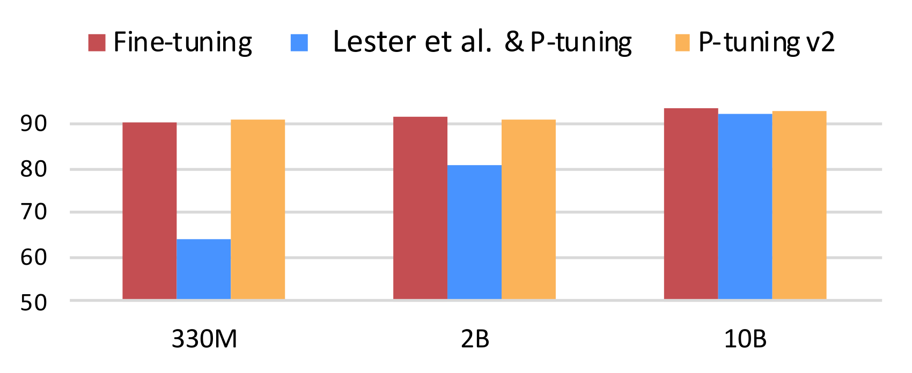
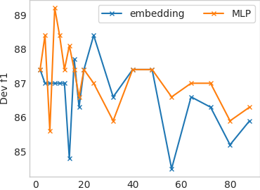

P-Tuning v2: Prompt Tuning Can Be Comparable to Fine-tuning Universally Across Scales and Tasks¶
Source: arXiv:2110.07602v3 · Original authors are credited below. Complete English transcription of the paper body, appendices, tables, captions, footnotes and references; layout is normalized from the original HTML.
Authors and affiliations¶
Xiao Liu Affiliation: Tsinghua University, KEG Email: liuxiao21@mails.tsinghua.edu.cn Kaixuan Ji Email: jkx19@mails.tsinghua.edu.cn Yicheng Fu Email: fyc19@mails.tsinghua.edu.cn Weng Lam Tam Affiliation: Tsinghua University, KEG Zhengxiao Du Affiliation: Tsinghua University, KEG Affiliation: Beijing Academy of Artificial Intelligence (BAAI) Zhilin Yang, Jie Tang Affiliation: Tsinghua University, KEG Affiliation: Shanghai Qi Zhi Institute
Abstract¶
Prompt tuning, which only tunes continuous prompts with a frozen language model, substantially reduces per-task storage and memory usage at training. However, in the context of NLU, prior work reveals that prompt tuning does not perform well for normal-sized pretrained models. We also find that existing methods of prompt tuning cannot handle hard sequence labeling tasks, indicating a lack of universality. We present a novel empirical finding that properly optimized prompt tuning can be universally effective across a wide range of model scales and NLU tasks. It matches the performance of finetuning while having only 0.1%-3% tuned parameters. Our method P-Tuning v2 is an implementation of Deep Prompt Tuning Li and Liang (2021) ; Qin and Eisner (2021) optimized and adapted for NLU. Given the universality and simplicity of P-Tuning v2, we believe it can serve as an alternative to finetuning and a strong baseline for future research. 1
Introduction¶
Pretrained language models Radford et al. (2019) ; Devlin et al. (2018) ; Yang et al. (2019) ; Raffel et al. (2019) improve performance on a wide range of natural language understanding (NLU) tasks. A widely-used method, fine-tuning , updates the entire set of model parameters for a target task. While fine-tuning obtains good performance, it is memory-consuming during training because gradients and optimizer states for all parameters must be stored. Moreover, keeping a copy of model parameters for each task during inference is inconvenient since pre-trained models are usually large.
Prompting , on the other hand, freezes all parameters of a pre-trained model and uses a natural language prompt to query a language model Brown et al. (2020) . For example, for sentiment analysis, we can concatenate a sample (e.g., "Amazing movie!") with a prompt “This movie is [MASK]” and ask the pre-trained language model to predict the probabilities of masked token being “good” and “bad” to decide the sample’s label. Prompting requires no training at all and stores one single copy of model parameters. However, discrete prompting Shin et al. (2020) ; Gao et al. (2020) can lead to suboptimal performance in many cases compared to fine-tuning.

Figure 1: Average scores on RTE, BoolQ and CB of SuperGLUE dev. With 0.1% task-specific parameters, P-tuning v2 can match fine-tuning across wide scales of pre-trained models, while Lester et al. (2021) & P-tuning can make it conditionally at 10B scale.
Prompt tuning 2 is an idea of tuning only the continuous prompts. Specifically, Liu et al. (2021) ; Lester et al. (2021) proposed to add trainable continuous embeddings (also called continuous prompts) to the original sequence of input word embeddings. Only the continuous prompts are updated during training. While prompt tuning improves over prompting on many tasks Liu et al. (2021) ; Lester et al. (2021) ; Zhong et al. (2021) , it still underperforms fine-tuning when the model size is not large, specifically less than 10 billion parameters Lester et al. (2021) . Moreover, as shown in our experiments, prompt tuning performs poorly compared to fine-tuning on several hard sequence labeling tasks such as extractive question answering (Cf. Section 4.2 ).
Our main contribution in this paper is a novel empirical finding that properly optimized prompt tuning can be comparable to fine-tuning universally across various model scales and NLU tasks. In contrast to observations in prior work, our discovery reveals the universality and potential of prompt tuning for NLU.
Technically, our approach P-tuning v2 is not conceptually novel. It can be viewed as an optimized and adapted implementation of Deep Prompt Tuning Li and Liang (2021) ; Qin and Eisner (2021) designed for generation and knowledge probing. The most significant improvement originates from appling continuous prompts for every layer of the pretrained model, instead of the mere input layer. Deep prompt tuning increases the capacity of continuous prompts and closes the gap to fine-tuning across various settings, especially for small models and hard tasks. Moreover, we present a series of critical details of optimization and implementation to ensure finetuning-comparable performance.
Experimental results show that P-tuning v2 matches the performance of fine-tuning at different model scales ranging from 300M to 10B parameters and on various hard sequence tagging tasks such as extractive question answering and named entity recognition. P-tuning v2 has 0.1% to 3% trainable parameters per task compared to fine-tuning, which substantially reduces training time memory cost and per-task storage cost.
Preliminaries¶
NLU Tasks. In this work, we categorize NLU challenges into two families: simple classification tasks and hard sequence labeling tasks . 3 Simple classification tasks involve classification over a label space. Most datasets from GLUE Wang et al. (2018) and SuperGLUE Wang et al. (2019) are in this category. Hard sequence labeling tasks involve classification over a sequence of tokens, such as named entity recognition and extractive question answering.
Prompt Tuning. Let \(\mathcal{V}\) be the vocabulary of a language model \(\mathcal{M}\) and let \(\mathbf{e}\) be the embedding layer of \(\mathcal{M}\) . In the case of discrete prompting Schick and Schütze (2020) , prompt tokens {"It", "is", "[MASK]"} \(\subset\mathcal{V}\) can be used to classify a movie review. For example, given the input text \(\mathbf{x}=\) "Amazing movie!", the input embedding sequence is formulated as \([\mathbf{e}(\mathbf{x}),\mathbf{e}(\text{"It"}),\mathbf{e}(\text{"is"}),\mathbf{e}(\text{"[MASK]"})]\) .
Lester et al. (2021) and Liu et al. (2021) introduce trainable continuous prompts as a substitution to natural language prompts for NLU with the parameters of pretrained language models frozen. Given the trainable continuous embeddings \([h_{0},...,h_{i}]\) , the input embedding sequence is written as \([\mathbf{e}(\mathbf{x}),h_{0},...,h_{i},\mathbf{e}(\text{"[MASK]"})]\) , as illustrated in Figure 2 . Prompt tuning has been proved to be comparable to fine-tuning on 10-billion-parameter models on simple classification tasks Lester et al. (2021) ; Kim et al. (2021) ; Liu et al. (2021) .

Figure 2: From Lester et al. (2021) & P-tuning to P-tuning v2. Orange blocks (i.e., \(h_{0},...,h_{i}\) ) refer to trainable prompt embeddings; blue blocks are embeddings stored or computed by frozen pre-trained language models.
P-Tuning v2¶
Lack of Universality¶
Lester et al. (2021) ; Liu et al. (2021) have been proved quite effective in many NLP applications Wang et al. (2021a) ; Wang et al. (2021b) ; Chen et al. (2021) ; Zheng et al. (2021) ; Min et al. (2021) , but still fall short at replacing fine-tuning due to lack of universality, as discussed below.
Lack of universality across scales. Lester et al. (2021) shows that prompt tuning can be comparable to fine-tuning when the model scales to over 10 billion parameters. However, for medium-sized models (from 100M to 1B) that are widely used, prompt tuning performs much worse than fine-tuning.
Lack of universality across tasks. Though Lester et al. (2021) ; Liu et al. (2021) have shown superiority on some of the NLU benchmarks, the effectiveness of prompt tuning on hard sequence tagging tasks is not verified. Sequence tagging predicts a sequence of labels for each input token, which can be harder and incompatible with verbalizers Schick and Schütze (2020) . In our experiments (Cf. Section 4.2 and Table 3 ), we show that Lester et al. (2021) ; Liu et al. (2021) perform poorly on typical sequence tagging tasks compared to fine-tuning.
Considering these challenges, we propose P-tuning v2, which adapts deep prompt tuning Li and Liang (2021) ; Qin and Eisner (2021) as a universal solution across scales and NLU tasks.
Deep Prompt Tuning¶
In Lester et al. (2021) and Liu et al. (2021) , continuous prompts are only inserted into the input embedding sequence (Cf. Figure 2 (a)). This leads to two challenges. First, the number of tunable parameters is limited due to the constraints of sequence length. Second, the input embeddings have relatively indirect impact on model predictions.
To address these challenges, P-tuning v2 employs the idea of deep prompt tuning Li and Liang (2021) ; Qin and Eisner (2021) . As illustrated in Figure 2 , prompts in different layers are added as prefix tokens. On one hand, P-tuning v2 have more tunable task-specific parameters (from 0.01% to 0.1%-3%) to allow more per-task capacity while being parameter-efficient; on the other hand, prompts added to deeper layers have more direct impact on model predictions (see analysis in Appendix B ).
Optimization and Implementation¶
There are a few useful details of optimization and implementation for achieving the best performance.
Reparameterization. Prior works usually leverage a reparameterization encoder such as an MLP Li and Liang (2021) ; Liu et al. (2021) to transform trainable embeddings. However, for NLU, we discover that its usefulness depends on tasks and datasets. For some datasets (e.g., RTE and CoNLL04), MLP brings a consistent improvement; for the others, MLP leads to minimal or even negative effects on the results (e.g., BoolQ and CoNLL12). See Appendix B for more analysis.
Prompt Length. The prompt length plays a critical role in P-Tuning v2. We find that different NLU tasks usually achieve their best performance with different prompt lengths (Cf. Appendix B ). Generally, simple classification tasks prefer shorter prompts (less than 20); hard sequence labeling tasks prefer longer ones (around 100).
Multi-task Learning. Multi-task learning jointly optimizes multiple tasks with shared continuous prompts before fine-tuning for individual tasks. Multi-task is optional for P-Tuning v2 but can be used for further boost performance by providing a better initialization Gu et al. (2021) .
Classification Head. Using a language modeling head to predict verbalizers Schick and Schütze (2020) has been central for prompt tuning Liu et al. (2021) , but we find it unnecessary in a full-data setting and incompatible with sequence labeling. P-tuning v2 instead applies a randomly-initialized classification head on top of the tokens as in BERT Devlin et al. (2018) (Cf. Figure 2 ).
To clarify P-tuning v2’s major contribution, we present a conceptual comparison to existing prompt tuning approaches in Table 1 .
| Method | Task | Re- param. | Deep PT | Multi- task | No verb. |
|---|---|---|---|---|---|
| P-tuning Liu et al. (2021) | KP NLU | LSTM | - | - | - |
| PromptTuning Lester et al. (2021) | NLU | - | - | ✓ | - |
| Prefix Tuning Li and Liang (2021) | NLG | MLP | ✓ | - | - |
| Soft Prompts Qin and Eisner (2021) | KP | - | ✓ | - | - |
| P-tuning v2 (Ours) | NLU SeqTag | (depends) | ✓ | ✓ | ✓ |
Table 1: Conceptual comparison between P-tuning v2 and existing Prompt Tuning approaches (KP: Knowledge Probe; SeqTag: Sequence Tagging; Re-param.: Reparameterization; No verb.: No verbalizer).
Experiments¶
| #Size | BoolQ | BoolQ | BoolQ | CB | CB | CB | COPA | COPA | COPA | MultiRC (F1a) | MultiRC (F1a) | MultiRC (F1a) | |
|---|---|---|---|---|---|---|---|---|---|---|---|---|---|
| #Size | FT | PT | PT-2 | FT | PT | PT-2 | FT | PT | PT-2 | FT | PT | PT-2 | |
| BERT large | 335M | 77.7 | 67.2 | 75.8 | 94.6 | 80.4 | 94.6 | 69.0 | 55.0 | 73.0 | 70.5 | 59.6 | 70.6 |
| RoBERTa large | 355M | 86.9 | 62.3 | 84.8 | 98.2 | 71.4 | 100 | 94.0 | 63.0 | 93.0 | 85.7 | 59.9 | 82.5 |
| GLM xlarge | 2B | 88.3 | 79.7 | 87.0 | 96.4 | 76.4 | 96.4 | 93.0 | 92.0 | 91.0 | 84.1 | 77.5 | 84.4 |
| GLM xxlarge | 10B | 88.7 | 88.8 | 88.8 | 98.7 | 98.2 | 96.4 | 98.0 | 98.0 | 98.0 | 88.1 | 86.1 | 88.1 |
| #Size | ReCoRD (F1) | ReCoRD (F1) | ReCoRD (F1) | RTE | RTE | RTE | WiC | WiC | WiC | WSC | WSC | WSC | |
|---|---|---|---|---|---|---|---|---|---|---|---|---|---|
| #Size | FT | PT | PT-2 | FT | PT | PT-2 | FT | PT | PT-2 | FT | PT | PT-2 | |
| BERT large | 335M | 70.6 | 44.2 | 72.8 | 70.4 | 53.5 | 78.3 | 74.9 | 63.0 | 75.1 | 68.3 | 64.4 | 68.3 |
| RoBERTa large | 355M | 89.0 | 46.3 | 89.3 | 86.6 | 58.8 | 89.5 | 75.6 | 56.9 | 73.4 | 63.5 | 64.4 | 63.5 |
| GLM xlarge | 2B | 91.8 | 82.7 | 91.9 | 90.3 | 85.6 | 90.3 | 74.1 | 71.0 | 72.0 | 95.2 | 87.5 | 92.3 |
| GLM xxlarge | 10B | 94.4 | 87.8 | 92.5 | 93.1 | 89.9 | 93.1 | 75.7 | 71.8 | 74.0 | 95.2 | 94.2 | 93.3 |
Table 2: Results on SuperGLUE development set. P-tuning v2 surpasses P-tuning & Lester et al. (2021) on models smaller than 10B, matching the performance of fine-tuning across different model scales. (FT: fine-tuning; PT: Lester et al. (2021) & P-tuning; PT-2: P-tuning v2; bold : the best; underline : the second best).
| #Size | CoNLL03 | CoNLL03 | CoNLL03 | CoNLL03 | OntoNotes 5.0 | OntoNotes 5.0 | OntoNotes 5.0 | OntoNotes 5.0 | CoNLL04 | CoNLL04 | CoNLL04 | CoNLL04 | |
|---|---|---|---|---|---|---|---|---|---|---|---|---|---|
| #Size | FT | PT | PT-2 | MPT-2 | FT | PT | PT-2 | MPT-2 | FT | PT | PT-2 | MPT-2 | |
| BERT large | 335M | 92.8 | 81.9 | 90.2 | 91.0 | 89.2 | 74.6 | 86.4 | 86.3 | 85.6 | 73.6 | 84.5 | 86.6 |
| RoBERTa large | 355M | 92.6 | 86.1 | 92.8 | 92.8 | 89.8 | 80.8 | 89.8 | 89.8 | 88.8 | 76.2 | 88.4 | 90.6 |
| DeBERTa xlarge | 750M | 93.1 | 90.2 | 93.1 | 93.1 | 90.4 | 85.1 | 90.4 | 90.5 | 89.1 | 82.4 | 86.5 | 90.1 |
| #Size | SQuAD 1.1 dev (EM / F1) | SQuAD 1.1 dev (EM / F1) | SQuAD 1.1 dev (EM / F1) | SQuAD 1.1 dev (EM / F1) | SQuAD 1.1 dev (EM / F1) | SQuAD 1.1 dev (EM / F1) | SQuAD 1.1 dev (EM / F1) | SQuAD 1.1 dev (EM / F1) | SQuAD 2.0 dev (EM / F1) | SQuAD 2.0 dev (EM / F1) | SQuAD 2.0 dev (EM / F1) | SQuAD 2.0 dev (EM / F1) | SQuAD 2.0 dev (EM / F1) | SQuAD 2.0 dev (EM / F1) | SQuAD 2.0 dev (EM / F1) | SQuAD 2.0 dev (EM / F1) | |
|---|---|---|---|---|---|---|---|---|---|---|---|---|---|---|---|---|---|
| #Size | FT | FT | PT | PT | PT-2 | PT-2 | MPT-2 | MPT-2 | FT | FT | PT | PT | PT-2 | PT-2 | MPT-2 | MPT-2 | |
| BERT large | 335M | 84.2 | 91.1 | 1.0 | 8.5 | 77.8 | 86.0 | 82.3 | 89.6 | 78.7 | 81.9 | 50.2 | 50.2 | 69.7 | 73.5 | 72.7 | 75.9 |
| RoBERTa large | 355M | 88.9 | 94.6 | 1.2 | 12.0 | 88.5 | 94.4 | 88.0 | 94.1 | 86.5 | 89.4 | 50.2 | 50.2 | 82.1 | 85.5 | 83.4 | 86.7 |
| DeBERTa xlarge | 750M | 90.1 | 95.5 | 2.4 | 19.0 | 90.4 | 95.7 | 89.6 | 95.4 | 88.3 | 91.1 | 50.2 | 50.2 | 88.4 | 91.1 | 88.1 | 90.8 |
| #Size | CoNLL12 | CoNLL12 | CoNLL12 | CoNLL12 | CoNLL05 WSJ | CoNLL05 WSJ | CoNLL05 WSJ | CoNLL05 WSJ | CoNLL05 Brown | CoNLL05 Brown | CoNLL05 Brown | CoNLL05 Brown | |
|---|---|---|---|---|---|---|---|---|---|---|---|---|---|
| #Size | FT | PT | PT-2 | MPT-2 | FT | PT | PT-2 | MPT-2 | FT | PT | PT-2 | MPT-2 | |
| BERT large | 335M | 84.9 | 64.5. | 83.2 | 85.1 | 88.5 | 76.0 | 86.3 | 88.5 | 82.7 | 70.0 | 80.7 | 83.1 |
| RoBERTa large | 355M | 86.5 | 67.2 | 84.6 | 86.2 | 90.2 | 76.8 | 89.2 | 90.0 | 85.6 | 70.7 | 84.3 | 85.7 |
| DeBERTa xlarge | 750M | 86.5 | 74.1 | 85.7 | 87.1 | 91.2 | 82.3 | 90.6 | 91.2 | 86.9 | 77.7 | 86.3 | 87.0 |
Table 3: Results on Named Entity Recognition (NER), Question Answering (Extractive QA), and Semantic Role Labeling (SRL). All metrics in NER and SRL are micro-f1 score. (FT: fine-tuning; PT: P-tuning & Lester et al. (2021) ; PT-2: P-tuning v2; MPT-2: Multi-task P-tuning v2; bold : the best; underline : the second best).
We conduct extensive experiments over different commonly-used pre-trained models and NLU tasks to verify the effectiveness of P-tuning v2. In this work, all methods except for fine-tuning are conducted with frozen language model backbones , which accords with Lester et al. (2021) ’s setting but differs from Liu et al. (2021) ’s tuned setting. Ratios of task-specific parameters (e.g., 0.1%) are derived from comparing continuous prompts’ parameters with transformers’ parameters. Another thing to notice is that our experiments are all conducted in the fully-supervised setting rather than few-shot setting.
NLU Tasks. First, we include datasets from SuperGLUE Wang et al. (2019) to test P-tuning v2’s general NLU ability. Additionally, we introduce a suite of sequence labeling tasks, including named entity recognition Sang and De Meulder (2003) ; Weischedel et al. (2013) ; Carreras and Màrquez (2004) , extractive Question Answering Rajpurkar et al. (2016) , and semantic role labeling Carreras and Màrquez (2005) ; Pradhan et al. (2012) ).
Pre-trained Models. We include BERT-large Devlin et al. (2018) , RoBERTa-large Liu et al. (2019) , DeBERTa-xlarge He et al. (2020) , GLM-xlarge/xxlarge Du et al. (2021) for evaluation. They are all bidirectional models designed for NLU tasks, covering a wide range of sizes from about 300M to 10B.
Multitask Learning. For the multi-task setting, we combine the training sets of the datasets in each task type (e.g., combing all training sets of semantic role labeling). We use separate linear classifiers for each dataset while sharing the continuous prompts (Cf. Appendix A ).
P-tuning v2: Across Scales¶
Table 2 presents P-tuning v2’s performances across model scales. In SuperGLUE, performances of Lester et al. (2021) and P-tuning at smaller scales can be quite poor. On the contrary, P-tuning v2 matches the fine-tuning performance in all the tasks at a smaller scale. P-tuning v2 even significantly outperforms fine-tuning on RTE.
In terms of larger scales (2B to 10B) with GLM Du et al. (2021) , the gap between Lester et al. (2021) ; Liu et al. (2021) and fine-tuning is gradually narrowed down. On 10B scale, we have a similar observation as Lester et al. (2021) reports, that prompt tuning becomes competitive to fine-tuning. That said, P-tuning v2 is always comparable to fine-tuning at all scales but with only 0.1% task-specific parameters needed comparing to fine-tuning.
P-tuning v2: Across Tasks¶
From Table 3 , we observe that P-tuning v2 can be generally comparable to fine-tuning on all tasks. P-tuning and Lester et al. (2021) show much poorer performance, especially on QA, which might be the most challenging of the three tasks. We also notice that there are some abnormal results of Lester et al. (2021) and P-tuning on SQuAD 2.0. This is probably because SQuAD 2.0 contains unanswerable questions, which causes optimization challenges for single-layer prompt tuning. Multi-task learning generally brings significant improvements to P-Tuning v2 over most tasks except for QA.
Ablation Study¶
| SST-2 | RTE | BoolQ | CB | |
|---|---|---|---|---|
| CLS & linear head | 96.3 | 88.4 | 84.8 | 96.4 |
| Verbalizer & LM head | 95.8 | 86.6 | 84.6 | 94.6 |
Table 4: Comparison between [CLS] label with linear head and verbalizer with LM head on RoBERTa-large.
Verbalizer with LM head v.s. [CLS] label with linear head. Verbalizer with LM head has been a central component in previous prompt tuning approaches. However, for P-tuning v2 in a supervised setting, it is affordable to tune a linear head with about several thousand parameters. We present our comparison in Table 4 , where we keep other hyper-parameters and only change [CLS] label with linear head to verbalizer with LM head. Here, for simplicity, we use “true” and “false” for SST-2, RTE and BoolQ; “true”, “false” and “neutral” for CB. Results indicate that there is no significant difference between performances of verbalizer and [CLS].


Figure 3: Ablation study on prompt depth using BERT-large. “[x-y]" refers to the layer-interval we add continuous prompts (e.g., “21-24” means we are add prompts to transformer layers from 21 to 24). Same amount of continuous prompts added to deeper transformer layers (i.e., more close to the output layer) can yield a better performance than those added to beginning layers.
Prompt depth. The main difference between Lester et al. (2021) ; Liu et al. (2021) and P-tuning v2 is the multi-layer continuous prompts. To verify its exact influence, given a certain number of \(k\) layers to add prompts, we select them in both ascending and descending order to add prompts; for the rest layers, we left them untouched. As shown in Figure 3 , with the same amount of parameters (i.e., num of transformer layers to add prompts), adding them in the descending order is always better than in the ascending order. In the RTE case, only adding prompts to layers 17-24 can yield a very close performance to all layers.
Conclusions¶
We present P-tuning v2, a prompt tuning method. Despite its relatively limited technical novelty, it contributes to a novel finding that prompt tuning can be comparable to fine-tuning universally across scales (from 330M to 10B parameters) and tasks. With high accuracy and parameter efficiency, P-Tuning v2 can be a potential alternative for fine-tuning and a strong baseline for future work.
ACKNOWLEDGEMENT¶
We would like to thank the anonymous reviewers for their suggestions and comments. Jie Tang is supported by the NSFC for Distinguished Young Scholar (61825602) and NSFC (61836013). Kaixuan Ji is supported by Tsinghua University Initiative Scientific Research Program and DCST Student Academic Training Program.
References¶
-
Brown et al. (2020) Tom B Brown, Benjamin Mann, Nick Ryder, Melanie Subbiah, Jared Kaplan, Prafulla Dhariwal, Arvind Neelakantan, Pranav Shyam, Girish Sastry, Amanda Askell, et al. 2020. Language models are few-shot learners. arXiv preprint arXiv:2005.14165 .
-
Carreras and Màrquez (2004) Xavier Carreras and Lluís Màrquez. 2004. Introduction to the CoNLL-2004 shared task: Semantic role labeling. In Proceedings of the Eighth Conference on Computational Natural Language Learning (CoNLL-2004) at HLT-NAACL 2004 , pages 89–97, Boston, Massachusetts, USA. Association for Computational Linguistics.
-
Carreras and Màrquez (2005) Xavier Carreras and Lluís Màrquez. 2005. Introduction to the CoNLL-2005 shared task: Semantic role labeling. In Proceedings of the Ninth Conference on Computational Natural Language Learning (CoNLL-2005) , pages 152–164, Ann Arbor, Michigan. Association for Computational Linguistics.
-
Chen et al. (2021) Xiang Chen, Xin Xie, Ningyu Zhang, Jiahuan Yan, Shumin Deng, Chuanqi Tan, Fei Huang, Luo Si, and Huajun Chen. 2021. Adaprompt: Adaptive prompt-based finetuning for relation extraction. arXiv preprint arXiv:2104.07650 .
-
Devlin et al. (2018) Jacob Devlin, Ming-Wei Chang, Kenton Lee, and Kristina Toutanova. 2018. Bert: Pre-training of deep bidirectional transformers for language understanding. arXiv preprint arXiv:1810.04805 .
-
Devlin et al. (2018) Jacob Devlin, Ming-Wei Chang, Kenton Lee, and Kristina Toutanova. 2018. Bert: Pre-training of deep bidirectional transformers for language understanding. arXiv e-prints .
-
Du et al. (2021) Zhengxiao Du, Yujie Qian, Xiao Liu, Ming Ding, Jiezhong Qiu, Zhilin Yang, and Jie Tang. 2021. All nlp tasks are generation tasks: A general pretraining framework. arXiv preprint arXiv:2103.10360 .
-
Gao et al. (2020) Tianyu Gao, Adam Fisch, and Danqi Chen. 2020. Making pre-trained language models better few-shot learners. arXiv preprint arXiv:2012.15723 .
-
Gu et al. (2021) Yuxian Gu, Xu Han, Zhiyuan Liu, and Minlie Huang. 2021. Ppt: Pre-trained prompt tuning for few-shot learning. arXiv preprint arXiv:2109.04332 .
-
He et al. (2020) Pengcheng He, Xiaodong Liu, Jianfeng Gao, and Weizhu Chen. 2020. Deberta: Decoding-enhanced bert with disentangled attention.
-
Kim et al. (2021) Boseop Kim, HyoungSeok Kim, Sang-Woo Lee, Gichang Lee, Donghyun Kwak, Dong Hyeon Jeon, Sunghyun Park, Sungju Kim, Seonhoon Kim, Dongpil Seo, et al. 2021. What changes can large-scale language models bring? intensive study on hyperclova: Billions-scale korean generative pretrained transformers. arXiv preprint arXiv:2109.04650 .
-
Lester et al. (2021) Brian Lester, Rami Al-Rfou, and Noah Constant. 2021. The power of scale for parameter-efficient prompt tuning. arXiv preprint arXiv:2104.08691 .
-
Li and Liang (2021) Xiang Lisa Li and Percy Liang. 2021. Prefix-tuning: Optimizing continuous prompts for generation. arXiv preprint arXiv:2101.00190 .
-
Liu et al. (2021) Xiao Liu, Yanan Zheng, Zhengxiao Du, Ming Ding, Yujie Qian, Zhilin Yang, and Jie Tang. 2021. Gpt understands, too. arXiv:2103.10385 .
-
Liu et al. (2019) Yinhan Liu, Myle Ott, Naman Goyal, Jingfei Du, Mandar Joshi, Danqi Chen, Omer Levy, Mike Lewis, Luke Zettlemoyer, and Veselin Stoyanov. 2019. RoBERTa: A Robustly Optimized BERT Pretraining Approach. arXiv e-prints .
-
Min et al. (2021) Sewon Min, Mike Lewis, Hannaneh Hajishirzi, and Luke Zettlemoyer. 2021. Noisy channel language model prompting for few-shot text classification. arXiv preprint arXiv:2108.04106 .
-
Pradhan et al. (2012) Sameer Pradhan, Alessandro Moschitti, Nianwen Xue, Olga Uryupina, and Yuchen Zhang. 2012. CoNLL-2012 shared task: Modeling multilingual unrestricted coreference in OntoNotes. In Joint Conference on EMNLP and CoNLL - Shared Task , pages 1–40, Jeju Island, Korea. Association for Computational Linguistics.
-
Qin and Eisner (2021) Guanghui Qin and Jason Eisner. 2021. Learning how to ask: Querying lms with mixtures of soft prompts. arXiv preprint arXiv:2104.06599 .
-
Radford et al. (2019) Alec Radford, Jeffrey Wu, Rewon Child, David Luan, Dario Amodei, and Ilya Sutskever. 2019. Language models are unsupervised multitask learners. OpenAI blog , 1(8):9.
-
Raffel et al. (2019) Colin Raffel, Noam Shazeer, Adam Roberts, Katherine Lee, Sharan Narang, Michael Matena, Yanqi Zhou, Wei Li, and Peter J Liu. 2019. Exploring the limits of transfer learning with a unified text-to-text transformer. arXiv preprint arXiv:1910.10683 .
-
Rajpurkar et al. (2016) Pranav Rajpurkar, Jian Zhang, Konstantin Lopyrev, and Percy Liang. 2016. Squad: 100,000+ questions for machine comprehension of text.
-
Sang and De Meulder (2003) Erik F Sang and Fien De Meulder. 2003. Introduction to the conll-2003 shared task: Language-independent named entity recognition. arXiv preprint cs/0306050 .
-
Schick and Schütze (2020) Timo Schick and Hinrich Schütze. 2020. It’s not just size that matters: Small language models are also few-shot learners. arXiv preprint arXiv:2009.07118 .
-
Shin et al. (2020) Taylor Shin, Yasaman Razeghi, Robert L Logan IV, Eric Wallace, and Sameer Singh. 2020. Autoprompt: Eliciting knowledge from language models with automatically generated prompts. arXiv preprint arXiv:2010.15980 .
-
Wang et al. (2019) Alex Wang, Yada Pruksachatkun, Nikita Nangia, Amanpreet Singh, Julian Michael, Felix Hill, Omer Levy, and Samuel R. Bowman. 2019. SuperGLUE: A Stickier Benchmark for General-Purpose Language Understanding Systems. In NeurIPS 2019 , pages 3261–3275.
-
Wang et al. (2019) Alex Wang, Yada Pruksachatkun, Nikita Nangia, Amanpreet Singh, Julian Michael, Felix Hill, Omer Levy, and Samuel R. Bowman. 2019. Superglue: A stickier benchmark for general-purpose language understanding systems. arXiv e-prints .
-
Wang et al. (2018) Alex Wang, Amanpreet Singh, Julian Michael, Felix Hill, Omer Levy, and Samuel R. Bowman. 2018. Glue: A multi-task benchmark and analysis platform for natural language understanding. arXiv e-prints .
-
Wang et al. (2021a) Hongru Wang, Mingyu Cui, Zimo Zhou, Gabriel Pui Cheong Fung, and Kam-Fai Wong. 2021a. Topicrefine: Joint topic prediction and dialogue response generation for multi-turn end-to-end dialogue system. arXiv preprint arXiv:2109.05187 .
-
Wang et al. (2021b) Shuo Wang, Zhaopeng Tu, Zhixing Tan, Wenxuan Wang, Maosong Sun, and Yang Liu. 2021b. Language models are good translators. arXiv preprint arXiv:2106.13627 .
-
Weischedel et al. (2013) Ralph Weischedel, Martha Palmer, Mitchell Marcus, Eduard Hovy, Sameer Pradhan, Lance Ramshaw, Nianwen Xue, Ann Taylor, Jeff Kaufman, Michelle Franchini, et al. 2013. Ontonotes release 5.0 ldc2013t19. Linguistic Data Consortium, Philadelphia, PA , 23.
-
Xu et al. (2021) Lu Xu, Zhanming Jie, Wei Lu, and Lidong Bing. 2021. Better feature integration for named entity recognition. arXiv preprint arXiv:2104.05316 .
-
Yang et al. (2019) Zhilin Yang, Zihang Dai, Yiming Yang, Jaime Carbonell, Ruslan Salakhutdinov, and Quoc V Le. 2019. Xlnet: Generalized autoregressive pretraining for language understanding. arXiv preprint arXiv:1906.08237 .
-
Zheng et al. (2021) Yanan Zheng, Jing Zhou, Yujie Qian, Ming Ding, Jian Li, Ruslan Salakhutdinov, Jie Tang, Sebastian Ruder, and Zhilin Yang. 2021. Fewnlu: Benchmarking state-of-the-art methods for few-shot natural language understanding. arXiv preprint arXiv:2109.12742 .
-
Zhong et al. (2021) Zexuan Zhong, Dan Friedman, and Danqi Chen. 2021. Factual probing is [mask]: Learning vs. learning to recall. arXiv preprint arXiv:2104.05240 .



Figure 4: Ablation study on prompt length and reparamerization using RoBERTa-large. The conclusion can be very different given certain NLU task and dataset. (MQA: Multiple-choice QA)
Problem Formulation on Sequence Tagging¶
Name entity recognition (NER). NER aims to predict all spans of words that represent some given classes of entity with a sentence. We adopted CoNLL03 Sang and De Meulder (2003) , OntoNotes 5.0 Weischedel et al. (2013) and CoNLL04 Carreras and Màrquez (2004) . For CoNLL03 and CoNLL04, we trained our model on the standard train-develop-test split. For OntoNotes 5.0, we use the same train, develop, test split as Xu et al. (2021) . All the datasets are labeled in IOB2 format. We use sequence tagging to solve NER tasks by assigning labels marking the beginning and inside some classes of entity. The language models generate a representation for each token, and we use a linear classifier to predict the labels. We use the official scripts to evaluate the results. For the multi-task setting, we combine the training set of the three datasets for pre-training. We use different linear classifiers for each dataset while sharing the continuous prompts.
(Extractive) Question Answering (QA). Extractive QA is designed to extract the answer from the context given the context and a question. We use SQuAD Rajpurkar et al. (2016) 1.1 and 2.0, in which each answer is within a continuous span of the context. Following tradition, we formulate the problem as sequence tagging by assigning one of the two labels: ‘start’ or ‘end’ to each token and at last selecting the span of the most confident start-end pair as the extracted answer. If the probability of the most confident pair is lower than a threshold, the model will assume the question unanswerable. For the multi-task setting, our training set for pre-training combines the training sets of SQuAD 1.1 and 2.0. When pre-training, we assume that all the questions, regardless of their origin, are possibly unanswerable.
Semantic Role Labeling (SRL). SRL assigns labels to words or phrases in a sentence that indicate their semantic roles in the sentence. We evaluate P-tuning v2 on CoNLL05 Carreras and Màrquez (2005) and CoNLL12 Pradhan et al. (2012) . Since a sentence can have multiple verbs, we add the target verb token to the end of each sentence to help recognize which verb is used for prediction. We classify each word with a linear classifier based on the corresponding semantic role representation. For multi-task setting, the pre-train training set is a combination of the training set of CoNLL05 Carreras and Màrquez (2005) , CoNLL12 Pradhan et al. (2012) and propbank-release (a common extend data used for training SRL). The multi-task training strategy is similar to NER.
More Ablation Study¶
Due to the page limit, we present hyper-parameters and architecture designs ablations regarding reparameterization and prompt length in this section.
Embedding v.s. MLP reparameterization. In both prefix-tuning Li and Liang (2021) and P-tuning Liu et al. (2021) , authors discover the reparameterization to be useful in improving training speed, robustness and performance. However, we conduct experiments to show that the reparameterization effect is inconsistent across different NLU tasks and datasets.
As shown in Figure 4 , in RTE and CoNLL04, MLP reparameterization generally indicates better performance than embedding for almost all prompt lengths. However, in BoolQ, MLP and embedding’s results are competitive; in CoNLL12, the embedding consistently outperforms MLP.
Prompt Length. Prompt length is yet another influential hyper-parameter for P-tuning v2, and its optimal value varies from task to task. From Figure 4 , we observe that for simple NLU tasks, usually, a shorter prompt is enough for the best performance; for hard sequence tasks, usually, a longer prompt than 100 would be helpful.
We also discover that reparameterization has a close bond with optimal prompt length. For example, in RTE, CoNLL04, and BoolQ, MLP reparameterization achieves its optimal result earlier than embedding. This conclusion may contribute some thoughts on P-tuning’s optimization properties.
Footnotes¶
corresponding to: Zhilin Yang (zhiliny@tsinghua.edu.cn) and Jie Tang (jietang@tsinghua.edu.cn)
indicates equal contribution.
-
Our code and data are released at https://github.com/THUDM/P-tuning-v2 . ↩
-
We use “prompt tuning” to refer to a class of methods rather than a particular method. ↩
-
Note that the notions of “simple” and “hard” are specific to prompt tuning, because we find sequence labeling tasks are more challenging for prompt tuning. ↩